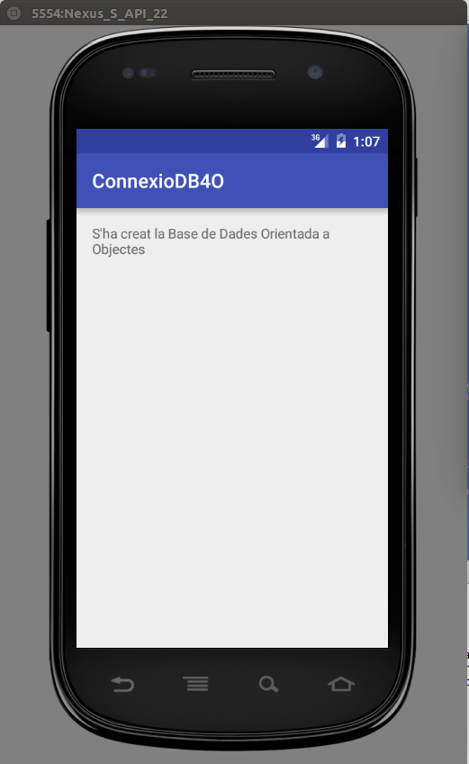
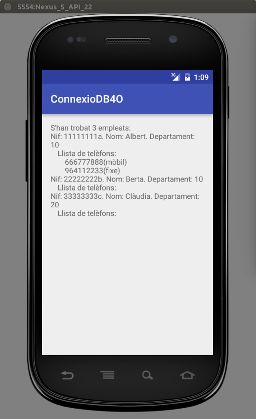

4 - Permanència en BD Orientades a Objectes
En el Tema 6, segona part, hem vist una Base de Dades Orientada a Objectes, DB4O, a la qual era extremadament senzill guardar els objectes, per més complicats que siguen. Utilitzàvem la versió incrustada (embedded) de DB4O, amb la qual era suficient afegir unes llibreries al projecte de Java.
Afortunadament, en Android serà igual de senzill. Haurem d'anar en compte d'incloure poques llibreries, ja que en els dispositius mòbils la grandària de l'aplicació és un punt crític. Intentarem incloure únicament un jar: db4o-8.0.276.16149-core-java5.jar (1,5 Mb) que com veiem és el cor. Si ens féra falta alguna utilitat no inclosa com podria ser per a fer una recerca, podríem intentar col·locar el jar que ho inclou tot, en compte de l'anterior: db4o-8.0.276.16149-all-java5.jar (2,5 Mb)
Per a incloure el jar, el més senzill és copiar-lo dins de app -> libs del projecte, i posteriorment apretar emb el botó de la dreta i triar Add as library.
Ho comprovarem amb un exemple que guardarà dades de la classe Empleat ja utilitzada en el Tema 6, part 2. Recordem que en l'empleat, a banda de guardar dades normals com el nom, el nit, l'edat, ... també guardàvem la foto, un currículum, l'adreça (de tipus Adreca, que constava de carrer, codi postal i població), un llistat de correus electrònics i un llistat de telèfons (de tipus Telefon, que constava d'un booleà que marcava si el telèfon era mòbil o no, i el número de telèfon).
Ho farem sobre un projecte nou, anomenat per exemple ConnexioDB4OJava i/o ConnexioDB4OKotlin.
-
Construïu un nou projecte anomenat ConnexioDB4OJava i/o ConnexioDB4OKotlin sobre el paquet com.example.connexiodb4ojava o com.example.connexiodb4okotlin, respectivament
-
Incorporeu les classes Empleat.java, Adreca.java i Telefon.java, ja creades en el tema 6, part 2.
-
Afegiu la llibreria db4o-8.0.276.16149-core-java5.jar. La manera més còmoda és copiar-la en app -> libs, i posteriorment apretar emb el botó de la dreta i triar Add as library.
-
Creeu el següent activity_main.xml:
<?xml version="1.0" encoding="utf-8"?>
<androidx.constraintlayout.widget.ConstraintLayout xmlns:android="http://schemas.android.com/apk/res/android"
xmlns:tools="http://schemas.android.com/tools"
android:layout_width="match_parent"
android:layout_height="match_parent"
tools:context=".MainActivity">
<TextView
android:text=""
android:id="@+id/text"
android:layout_width="match_parent"
android:layout_height="match_parent" />
</androidx.constraintlayout.widget.ConstraintLayout>Com podeu observar, tan sols hi ha un TextView per a poder visualitzar si connectem i observar algunes dades
JAVA
-
Creeu el següent programa principal:
package com.example.connexiodb4ojava;
import androidx.appcompat.app.AppCompatActivity;
import android.os.Bundle;
import android.widget.TextView;
import com.db4o.Db4oEmbedded;
import com.db4o.ObjectContainer;
import com.db4o.ObjectSet;
import java.io.File;
public class MainActivity extends AppCompatActivity {
@Override
protected void onCreate(Bundle savedInstanceState) {
super.onCreate(savedInstanceState);
setContentView(R.layout.activity_main);
TextView text = (TextView) findViewById(R.id.text);
File f = new File("/data/data/com.example.connexiodb4ojava/databases");
if ( ! f.exists()) {
f.mkdirs();
ObjectContainer bd = Db4oEmbedded.openFile("/data/data/com.example.connexiodb4ojava/databases/Empleats.db4o");
Empleat e1 = new Empleat("11111111a","Albert",10,40,1000,null,null,null,null,null);
//les dades més complicades les introduïm de forma especial
e1.setAdreca(new Adreca("C/ Major, 7","12001","Castelló"));
String[] corr = {"alu11111111a@ieselcaminas.org"};
e1.setCorreus_e(corr);
Telefon[] tels = {new Telefon(true,"666777888"),new Telefon(false,"964112233")};
e1.setTelefons(tels);
Empleat e2 = new Empleat("22222222b", "Berta", 10, 35, 1700, null, null, null, null, null);
Empleat e3 = new Empleat("33333333c", "Clàudia", 20, 37, 1500, null, null, null, null, null);
text.append("S'ha creat la Base de Dades Orientada a Objectes");
bd.store(e1);
bd.store(e2);
bd.store(e3);
bd.close();
}
else {
ObjectContainer bd1 = Db4oEmbedded.openFile("/data/data/com.example.connexiodb4ojava/databases/Empleats.db4o");
ObjectSet<Empleat> llista = bd1.queryByExample(new Empleat());
text.append("S'han trobat " + llista.size() + " empleats: \n");
for (Empleat e : llista) {
text.append("Nif: " + e.getNif() + ". Nom: " + e.getNom() + ". Departament: " + e.getDepartament() + "\n");
text.append("\tLlista de telèfons:\n");
if (e.getTelefons()!=null){
for (Telefon t : e.getTelefons()){
text.append("\t\t"+t.getNumero());
if (t.isMobil())
text.append("(mòbil)\n");
else
text.append("(fixe)\n");
}
}
}
bd1.close();
}
}
}KOTLIN
- Creeu el següent programa principal:
package com.example.connexiodb4okotlin
import androidx.appcompat.app.AppCompatActivity
import android.os.Bundle
import android.widget.TextView
import com.db4o.Db4oEmbedded
import java.io.File
class MainActivity : AppCompatActivity() {
override fun onCreate(savedInstanceState: Bundle?) {
super.onCreate(savedInstanceState)
setContentView(R.layout.activity_main)
val text = findViewById(R.id.text) as TextView
val f = File("/data/data/com.example.connexiodb4okotlin/databases")
if (!f.exists()) {
f.mkdirs()
val bd = Db4oEmbedded.openFile("/data/data/com.example.connexiodb4okotlin/databases/Empleats.db4o")
val e1 = Empleat("11111111a", "Albert", 10, 40, 1000.0, null, null, null, null, null)
//les dades més complicades les introduïm de forma especial
e1.setAdreca(Adreca("C/ Major, 7", "12001", "Castelló"))
val corr = arrayOf("alu11111111a@ieselcaminas.org")
e1.setCorreus_e(corr)
val tels = arrayOf<Telefon>(Telefon(true, "666777888"), Telefon(false, "964112233"))
e1.setTelefons(tels)
val e2 = Empleat("22222222b", "Berta", 10, 35, 1700.0, null, null, null, null, null)
val e3 = Empleat("33333333c", "Clàudia", 20, 37, 1500.0, null, null, null, null, null)
text.append("S'ha creat la Base de Dades Orientada a Objectes")
bd.store(e1)
bd.store(e2)
bd.store(e3)
bd.close()
} else {
val bd1 = Db4oEmbedded.openFile("/data/data/com.example.connexiodb4okotlin/databases/Empleats.db4o")
val llista = bd1.queryByExample<Empleat>(Empleat())
text.append("S'han trobat " + llista.size + " empleats: \n")
for (e in llista) {
text.append("Nif: " + e.getNif() + ". Nom: " + e.getNom() + ". Departament: " + e.getDepartament() + "\n")
text.append("\tLlista de telèfons:\n")
if (e.getTelefons() != null) {
for (t in e.getTelefons()) {
text.append("\t\t" + t.getNumero())
if (t.isMobil())
text.append("(mòbil)\n")
else
text.append("(fixe)\n")
}
}
}
bd1.close()
}
}
}
El programa és molt senzill. Si no existia el directori databases el crea (per evitar problemes) i construeix la Base de Dades. Si ja existia, assumeix que està creada la Base de Dades, i visualitza el seu contingut.
La primera vegada que s'execute el programa visualitzarà que s'ha creat la Base de Dades. La segona, es visualitzaran algunes dades:
|  |  |
Llicenciat sota la Llicència Creative Commons Reconeixement NoComercial CompartirIgual 2.5